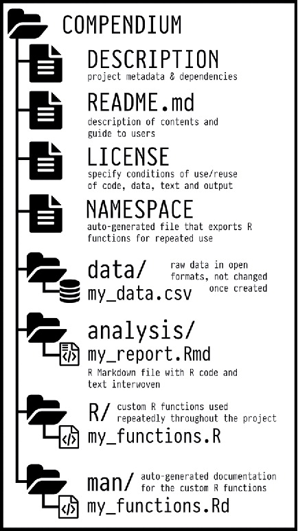

Last updated: 2018-10-31
workflowr checks: (Click a bullet for more information) ✔ R Markdown file: up-to-date
Great! Since the R Markdown file has been committed to the Git repository, you know the exact version of the code that produced these results.
✔ Environment: empty
Great job! The global environment was empty. Objects defined in the global environment can affect the analysis in your R Markdown file in unknown ways. For reproduciblity it’s best to always run the code in an empty environment.
✔ Seed:
set.seed(20181015)
The command set.seed(20181015) was run prior to running the code in the R Markdown file. Setting a seed ensures that any results that rely on randomness, e.g. subsampling or permutations, are reproducible.
✔ Session information: recorded
Great job! Recording the operating system, R version, and package versions is critical for reproducibility.
✔ Repository version: 4d17ca9
wflow_publish or wflow_git_commit). workflowr only checks the R Markdown file, but you know if there are other scripts or data files that it depends on. Below is the status of the Git repository when the results were generated:
Ignored files:
Ignored: .DS_Store
Ignored: .Rhistory
Ignored: .Rproj.user/
Ignored: analysis/.DS_Store
Ignored: analysis/data/
Ignored: analysis/package.Rmd
Ignored: assets/
Ignored: docs/.DS_Store
Untracked files:
Untracked: docs/assets/Boettiger-2018-Ecology_Letters.pdf
Untracked: docs/assets/Packaging-Data-Analytical Work-Reproducibly-Using-R-and-Friends.pdf
Untracked: docs/css/
Untracked: libs/
Unstaged changes:
Modified: analysis/_site.yml
Modified: analysis/index.Rmd
Research is increasingly computational
The goal of a research compendium is to provide a standard and easily recognizable way for organizing the digital materials of a project to enable others to inspect, reproduce, and extend the research.
Separate of data, method, and output, while making the relationship between them clear.
Specify the computational environment that was used for the original analysis.
R packages can be used as a research compendium for organising and sharing files!
_Wickham, H. (2017) Research compendia. Note prepared for the 2017 rOpenSci Unconf_
Ben Marwick, Carl Boettiger & Lincoln Mullen (2018) Packaging Data Analytical Work Reproducibly Using R (and Friends), The American Statistician, 72:1, 80-88, DOI: <10.1080/00031305.2017.1375986>

Example use of the R package structure for a research compendium (source Marwick et al, 2018)
rrtoolsThe goal of rrtools is to provide instructions, templates, and functions for making a basic compendium suitable for writing reproducible research with R.
rrtools build on tools & conventions for R package development to
rrtools extends and works with a number of R packages:
devtools: functions for package development
usethis: automates repetitive tasks that arise during project setup and development
bookdown: facilitates writing books and long-form articles/reports with R Markdown
The majority of the workshop I will be live coding 😨 so that you can follow along. You will get a lot more out of the workshop if you do.
However, handouts of the materials we’ll cover are available if you get stuck!
click on Clone or download
click on Download ZIP
Unzip the file
In this workshop we’ll use materials associated with a published paper (text, data and code) to create a research compendium around it.
By the end of the workshop, you should be able to:
Be able to Create a Research Compendium to manage and share resources associated with an academic publication.
Understand the basics of managing code as an R package.
Be able to produce a reproducible manuscript from a single rmarkdown document.
Appreciate the power of convention!
It’s like agreeing that we will all drive on the left or the right. A hallmark of civilization is following conventions that constrain your behavior a little, in the name of public safety.
Jenny Bryan on Project-oriented workflows
Intermediate
Familiarity with Version Control through RStudio and rmarkdown.
Pandoc (>= 1.17.2) LaTeX
If you don’t have LaTeX installed, consider installing TinyTeX, a custom LaTeX distribution based on TeX Live that is small in size but functions well in most cases, especially for R users.
Check docs before before installing.
R version 3.4.4 (2018-03-15)
Platform: x86_64-apple-darwin15.6.0 (64-bit)
Running under: macOS High Sierra 10.13.3
Matrix products: default
BLAS: /Library/Frameworks/R.framework/Versions/3.4/Resources/lib/libRblas.0.dylib
LAPACK: /Library/Frameworks/R.framework/Versions/3.4/Resources/lib/libRlapack.dylib
locale:
[1] en_GB.UTF-8/en_GB.UTF-8/en_GB.UTF-8/C/en_GB.UTF-8/en_GB.UTF-8
attached base packages:
[1] stats graphics grDevices utils datasets methods base
loaded via a namespace (and not attached):
[1] Rcpp_0.12.19 rstudioapi_0.8 knitr_1.20
[4] whisker_0.3-2 magrittr_1.5 workflowr_1.1.1
[7] rlang_0.3.0 stringr_1.3.1 tools_3.4.4
[10] R.oo_1.21.0 git2r_0.23.0 htmltools_0.3.6
[13] yaml_2.2.0 rprojroot_1.3-2 digest_0.6.18
[16] assertthat_0.2.0 crayon_1.3.4 purrr_0.2.5
[19] R.utils_2.6.0 glue_1.3.0 evaluate_0.11
[22] rmarkdown_1.10 emo_0.0.0.9000 stringi_1.2.4
[25] compiler_3.4.4 backports_1.1.2 R.methodsS3_1.7.1
[28] lubridate_1.7.4 This reproducible R Markdown analysis was created with workflowr 1.1.1